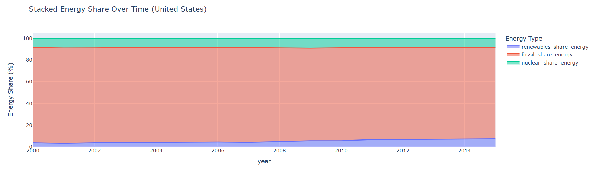
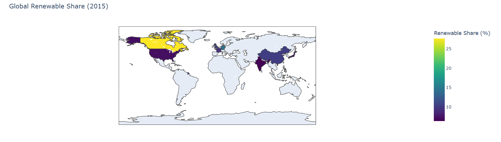
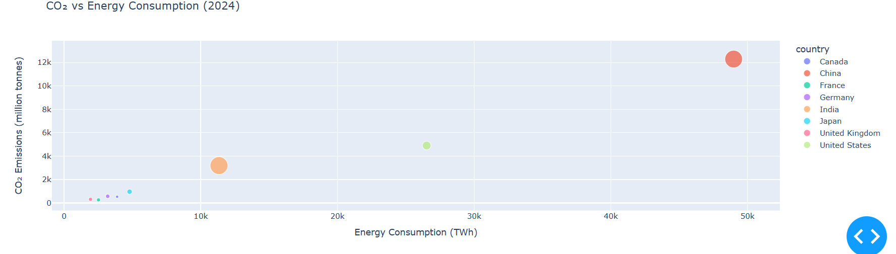

Global Energy Consumption & Renewable Energy Dashboard
Team Member
Umer Khalid (2022605)
Ahmed Ali Khan (2022054)
Project Description
This project analyzes global energy consumption trends and the transition toward
renewable energy sources using an interactive dashboard. The dashboard provides
temporal visualizations, comparison charts, and global insights on renewable
energy adoption and CO₂ emissions.
Dataset
Our World in Data – Energy Dataset (1990–2022). The dataset includes country-level
energy consumption, renewable energy share, fossil fuel share, nuclear energy share,
population, and CO₂ emissions.
Tools & Technologies
- Python
- Pandas
- Plotly & Dash
- GitHub Pages
Dashboard Features
- Country selector (dropdown) to choose major countries with reliable data
- Year range slider to filter data from 1990–2022
- Energy type selector (Renewables / Fossil / Nuclear) for trend analysis
- Primary energy consumption line chart
- Selected energy type trend line chart
- CO₂ emissions trend line chart
- Stacked area chart showing energy share breakdown
- Top 15 countries renewable energy share bar chart (latest year)
- Global renewable energy share map (latest year)
- CO₂ vs Energy Consumption scatter plot (latest year)
Dashboard Visuals
1. Primary Energy Consumption

2. Selected Energy Type Trend

3. CO₂ Emissions Trend

4. Stacked Energy Share Area Chart

5. Top 15 Countries Renewable Share

6. Global Renewable Share Map

7. CO₂ vs Energy Consumption Scatter Plot

GitHub Repository
https://github.com/umerkhaliid/energy-dashboard